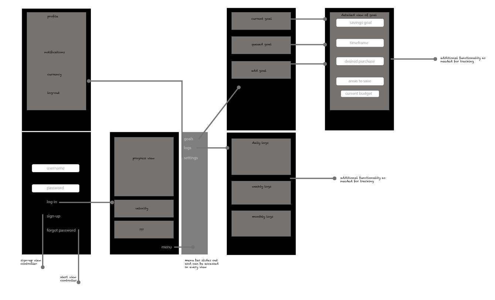
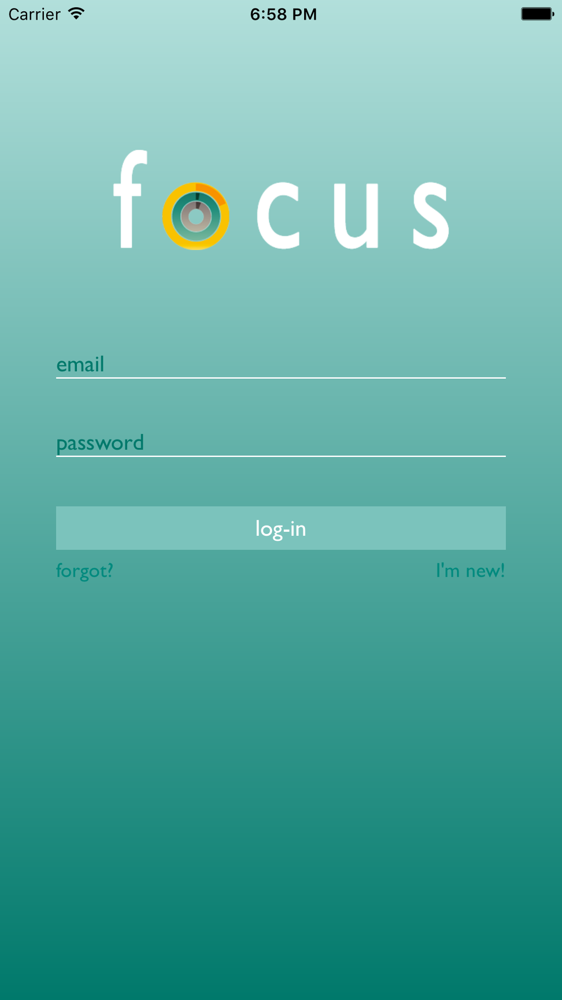
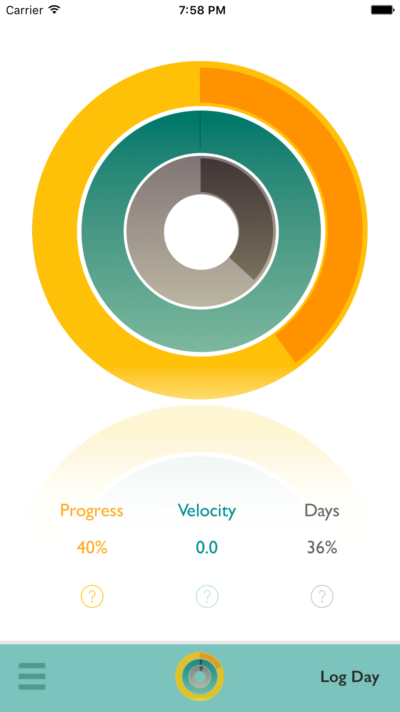
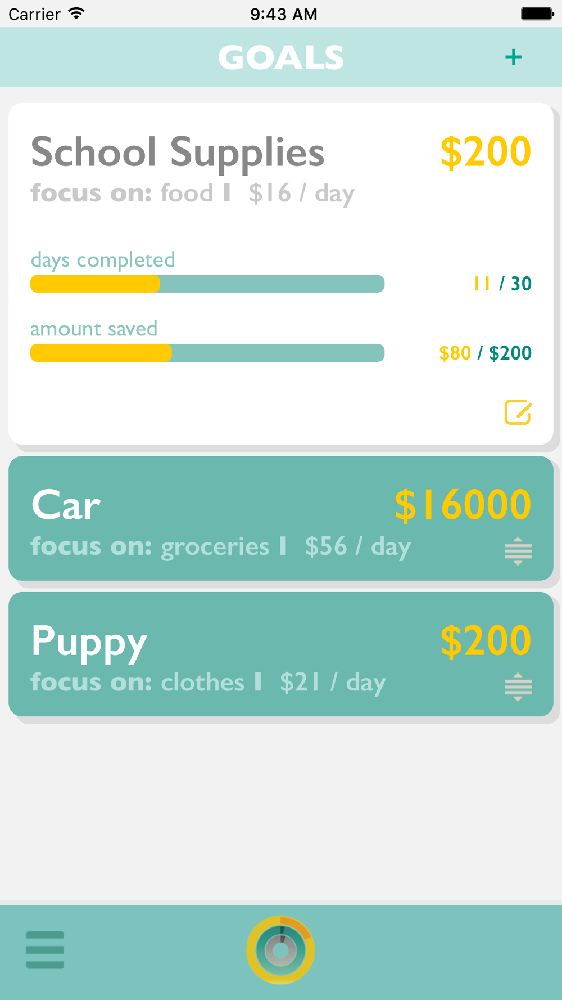
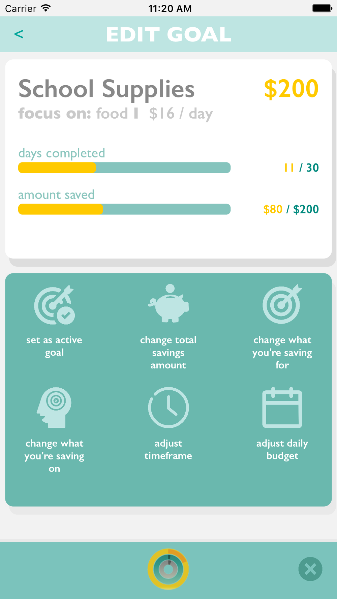
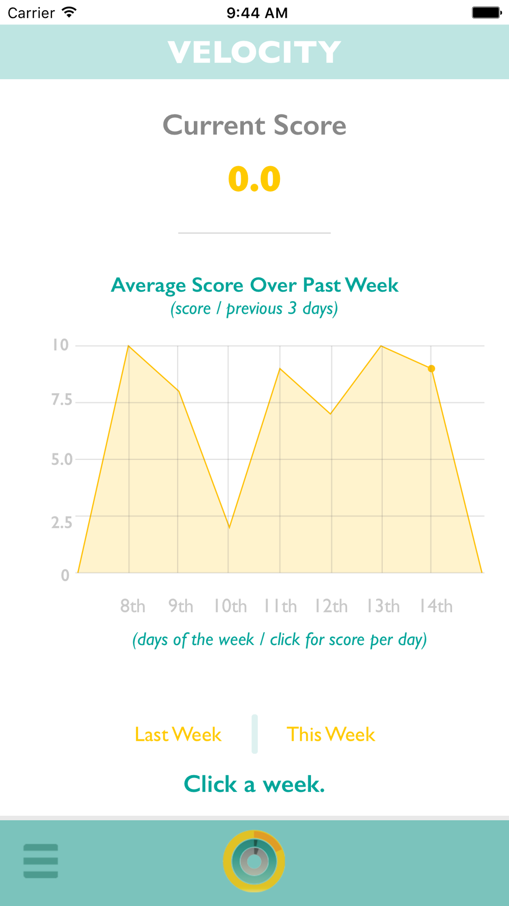

Focus - Treat Yourself
iOS
Focus is an iOS mobile application that allows you to set financial goals and visually track them through incremental savings. The aim is to focus on one goal at a time, with daily inputs updated via local push notifications and local data persisted with Core Data and online via Google Firebase Database. Other technologies integrated are Firebase Authentication and Login, Core Graphics, Core Animation, UIKit, App Controllers, Notifications and observers, and custom / container views. Team members: Doug Galante, Victoria Melendez, Marie Park, Michael Young.
User Experience: Flow
1. Choose a goal and an area of your life that you can spend less on.
2. Enter your daily spending.
3. Monitor your progress.
General users will receive daily notifications to enter then savings input. Focus will calculate, display, and track the progress of the active goal based on initial goal information created. The aim of Focus is to keep the user focused on one active goal at a time. The user has the option to edit their initial goal settings or to focus on another more immediate goal instead. The following example portrays a user experience scenario.
Use Experience Scenario: A day in the life of Jim
Meet Jim! Jim spends $10 a day on lunch. Jim really wants to buy his mom a $200 necklace for her birthday. He has 30 days to do it. Jim is using Focus to calculate and track his daily spendings and savings to achieve his goal. Every day Jim will receive a notification on his phone that will remind him to input his savings until he can finally buy Mom that necklace. Every time Jim logs into the app, Focus will visually display his progress. When his goal is achieved, he can focus on another!





